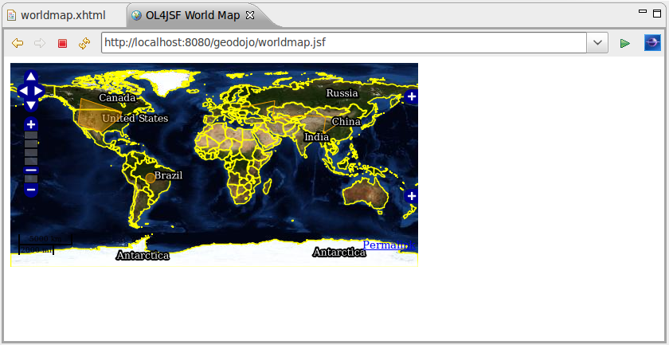

Disponibilizando os mapas de forma rica na web - OpenLayers & Ol4JSF¶
Contents
Nesse capítulo vamos entender qual a relação existente entre o OpenLayers e o OL4JSF. Aprenderemos como instalar, configurar e utilizar os recursos disponíveis no OL4JSF em nossas aplicações JEE.
OpenLayers & OL4JSF¶
O OpenLayers é uma biblioteca javascript, opensource, que possui uma grande variedade de recursos para plotagem de mapas nos principais navegadores do mercado. Se ela é tão boa assim, então qual o problema?
Um dos grandes problemas não é a API em si, mas o javascript. Por ser uma linguagem dinâmica, as IDEs não conseguem ajudar muito e os desenvolvedores acabam sempre tendo que recorrer para a documentação para fazer as mínimas coisas. Em qual pacote está a classe responsável por exibir o mapa? Quais são parâmetros para instanciação? Enfim, cabe ao desenvolvedor conhecer cada detalhe da API através da documentação.
É nesse cenário que entra o OL4JSF. Ele encapsula boa parte da lógica responsável pela instanciação dos objetos OpenLayers e ainda, pelo fato de ser um conjunto de componentes JSF, integra-se perfeitamente aos ambientes de desenvolvimento JEE atuais: auto completar, ajuda contextual, janela de propriedades, palheta de componentes, etc.
Mas agora vem a melhor parte. O OL4JSF já foi concebido para facilitar o desenvolvimento, porém sem “engessá-lo”. Como assim? Desenvolvedores experientes com OpenLayers na maioria das vezes vão querer ter a possibilidade de acessar os recursos da API diretamente. Além disso, nem todas as funcionalidades existentes no OpenLayers estarão disponíveis no OL4JSF, ou pelo menos, poderão levar um certo tempo para serem implementadas. Sendo assim, os componentes OL4JSF podem ser disponibilizados para o contexto javascript na forma de variáveis globais e serem acessados normalmente em qualquer código javascript da página. Adicionalmente, o OL4JSF já disponibiliza um componente <m:script /> que possibilita a inserção de código javascript diretamente na elaboração do mapa. Então, que tal visualizarmos isso e muito mais na prática?
Instalação do OL4JSF¶
Vamos instalar o OL4JSF via Maven. Para isso basta colocar a seguintes entradas no pom.xml:
<repositories>
<!-- Outros repositórios omitidos -->
<repository>
<id>java.net2</id>
<name>Repository hosting the jee6 artifacts</name>
<url>http://download.java.net/maven/2</url>
</repository>
</repositories>
<dependencies>
<!-- Outras dependencias omitidas -->
<dependency>
<groupId>org.ol4jsf</groupId>
<artifactId>ol4jsf-core</artifactId>
<version>2.0-SNAPSHOT</version>
<scope>compile</scope>
</dependency>
</dependencies>
Nesse altura do campeonato, o nosso pom deve estar assim:
1 2 3 4 5 6 7 8 9 10 11 12 13 14 15 16 17 18 19 20 21 22 23 24 25 26 27 28 29 30 31 32 33 34 35 36 37 38 39 40 41 42 43 44 45 46 47 48 49 50 51 52 53 54 55 56 57 58 59 60 61 62 63 64 65 66 67 68 69 70 71 72 73 74 75 76 77 78 79 80 81 82 83 84 85 86 87 88 89 90 91 92 93 94 95 96 97 98 99 100 101 102 103 104 105 106 107 108 109 110 111 112 113 114 115 116 117 118 119 120 121 122 123 124 125 126 127 128 129 130 131 132 133 134 135 136 137 138 139 140 141 142 143 144 145 146 147 148 | <project xmlns="http://maven.apache.org/POM/4.0.0" xmlns:xsi="http://www.w3.org/2001/XMLSchema-instance"
xsi:schemaLocation="http://maven.apache.org/POM/4.0.0 http://maven.apache.org/xsd/maven-4.0.0.xsd">
<modelVersion>4.0.0</modelVersion>
<groupId>org.latinoware.geodojo</groupId>
<artifactId>geodojo</artifactId>
<version>1.0-SNAPSHOT</version>
<name>Geodojo Project</name>
<packaging>war</packaging>
<repositories>
<repository>
<id>java.net2</id>
<name>Repository hosting the jee6 artifacts</name>
<url>http://download.java.net/maven/2</url>
</repository>
<repository>
<id>EclipseLink Repo</id>
<url>http://www.eclipse.org/downloads/download.php?r=1&nf=1&file=/rt/eclipselink/maven.repo</url>
</repository>
<repository>
<id>OSGEO GeoTools repo</id>
<url>http://download.osgeo.org/webdav/geotools</url>
</repository>
<repository>
<id>Hibernate Spatial repo</id>
<url>http://www.hibernatespatial.org/repository</url>
</repository>
<!-- add JBOSS repository for easy access to Hibernate libraries -->
<repository>
<id>JBOSS</id>
<url>http://repository.jboss.com/maven2</url>
</repository>
</repositories>
<properties>
<project.build.sourceEncoding>UTF-8</project.build.sourceEncoding>
</properties>
<build>
<plugins>
<plugin>
<groupId>org.apache.maven.plugins</groupId>
<artifactId>maven-compiler-plugin</artifactId>
<configuration>
<source>1.6</source>
<target>1.6</target>
</configuration>
</plugin>
</plugins>
</build>
<dependencies>
<dependency>
<groupId>javax.servlet</groupId>
<artifactId>jstl</artifactId>
<version>1.2</version>
</dependency>
<dependency>
<groupId>javax.servlet</groupId>
<artifactId>servlet-api</artifactId>
<version>2.5</version>
</dependency>
<dependency>
<groupId>hsqldb</groupId>
<artifactId>hsqldb</artifactId>
<version>1.8.0.10</version>
<scope>compile</scope>
</dependency>
<dependency>
<groupId>javax.enterprise</groupId>
<artifactId>cdi-api</artifactId>
<version>1.0-SP1</version>
<scope>compile</scope>
</dependency>
<dependency>
<groupId>org.jboss.weld</groupId>
<artifactId>weld-api</artifactId>
<version>1.0-SP1</version>
<scope>runtime</scope>
</dependency>
<dependency>
<groupId>org.jboss.weld.servlet</groupId>
<artifactId>weld-servlet</artifactId>
<version>1.0.1-Final</version>
<scope>runtime</scope>
</dependency>
<dependency>
<groupId>com.sun.faces</groupId>
<artifactId>jsf-api</artifactId>
<version>2.0.3</version>
<scope>compile</scope>
</dependency>
<dependency>
<groupId>com.sun.faces</groupId>
<artifactId>jsf-impl</artifactId>
<version>2.0.3</version>
<scope>runtime</scope>
</dependency>
<dependency>
<groupId>hibernate</groupId>
<artifactId>hibernate-entitymanager</artifactId>
<version>3.4.0.GA</version>
</dependency>
<!-- the Postgis JDBC driver -->
<dependency>
<groupId>org.postgis</groupId>
<artifactId>postgis-jdbc</artifactId>
<version>1.3.3</version>
</dependency>
<!-- the postgresql driver -->
<dependency>
<groupId>postgresql</groupId>
<artifactId>postgresql</artifactId>
<!-- scope>provided</scope> -->
<version>8.4-701.jdbc3</version>
</dependency>
<!-- Hibernate uses slf4j for logging, for our purposes here use the simple backend -->
<dependency>
<groupId>org.slf4j</groupId>
<artifactId>slf4j-simple</artifactId>
<version>1.5.6</version>
</dependency>
<dependency>
<groupId>org.slf4j</groupId>
<artifactId>slf4j-api</artifactId>
<version>1.5.6</version>
</dependency>
<!-- GIS DEPENDENCIES -->
<dependency>
<groupId>org.ol4jsf</groupId>
<artifactId>ol4jsf-core</artifactId>
<version>2.0-SNAPSHOT</version>
<scope>compile</scope>
</dependency>
<dependency>
<groupId>org.hibernatespatial</groupId>
<artifactId>hibernate-spatial-postgis</artifactId>
<version>1.0</version>
</dependency>
</dependencies>
</project>
|
Exibindo nosso primeiro mapa¶
Vamos criar uma página para exibir a layer ‘world’ adicionada ao geoserver no capítulo anterior.
- Clique com o botão direito sobre o diretório geodojo/src/main/webapps e escolha a opção HTML File. A seguinte tela deverá aparecer:
{kind=link}
- Digite o nome worldmap.xhtml e, em seguida, clique em next.
{kind=link}
- Selecione a opção New XHTML File (1.0 transitional) e finish.
- Substitua o código gerado pelo abaixo:
1 2 3 4 5 6 7 8 9 10 11 12 13 14 15 16 17 | <?xml version="1.0" encoding="UTF-8" ?>
<!DOCTYPE html PUBLIC "-//W3C//DTD XHTML 1.0 Transitional//EN" "http://www.w3.org/TR/xhtml1/DTD/xhtml1-transitional.dtd">
<html xmlns="http://www.w3.org/1999/xhtml"
xmlns:h="http://java.sun.com/jsf/html"
xmlns:f="http://java.sun.com/jsf/core"
xmlns:ui="http://java.sun.com/jsf/facelets"
xmlns:m="http://www.ol4jsf.org">
<h:head>
<meta http-equiv="Content-Type" content="text/html; charset=UTF-8" />
<title>OL4JSF World Map</title>
</h:head>
<h:body>
<m:map width="512px" height="256px">
<m:wmsLayer name="World Layer" url="http://localhost:8082/geoserver/wms" params="{layers:'world'}" />
</m:map>
</h:body>
</html>
|
- Execute o projeto e veja o resultado.

Muito simples, não? :)
Acabamos de exibir um mapa contendo uma única camada vinda do GeoServer. Que tal adicionarmos mais controles ao mapa?
Adicionando controles¶
No OL4JSF existem dois grandes grupos de componentes: <nome>Layer e <nome>Control. Os pertencentes ao primeiro grupo são componentes que representam camadas (wms, wfs, google, etc). Já o segundo grupo, são controles (zoom, layerSwitch, etc).
Vamos incrementar nosso mapa com alguns controles, alterando o xhtml anterior e deixando-o assim:
1 2 3 4 5 6 7 8 9 10 11 12 13 14 15 16 17 18 19 20 21 22 23 24 25 26 27 28 | <?xml version="1.0" encoding="UTF-8" ?>
<!DOCTYPE html PUBLIC "-//W3C//DTD XHTML 1.0 Transitional//EN" "http://www.w3.org/TR/xhtml1/DTD/xhtml1-transitional.dtd">
<html xmlns="http://www.w3.org/1999/xhtml"
xmlns:h="http://java.sun.com/jsf/html"
xmlns:f="http://java.sun.com/jsf/core"
xmlns:ui="http://java.sun.com/jsf/facelets"
xmlns:m="http://www.ol4jsf.org">
<h:head>
<meta http-equiv="Content-Type" content="text/html; charset=UTF-8" />
<title>OL4JSF World Map</title>
</h:head>
<h:body>
<m:map width="512px" height="256px" options="{controls: [], numZoomLevels: 6}">
<m:wmsLayer name="World Layer Bluemarble"
url="http://localhost:8082/geoserver/wms" params="{layers:'geodojo:bluemarble'}" />
<m:wmsLayer name="World Layer ADM"
url="http://localhost:8082/geoserver/wms" params="{layers:'geodojo:world_adm',transparent:true}" options="{isBaseLayer:false}"/>
<m:navigationControl />
<m:panZoomBarControl />
<m:layerSwitcherControl options="{ascending:false}" />
<m:scaleLineControl />
<m:mousePositionControl />
<m:overviewMapControl />
<m:keyboardDefaultsControl />
<m:permalinkControl />
</m:map>
</h:body>
</html>
|
Observem que tanto no atributo options quanto no params utilizamos um hash javascript passando parâmetros adicionais ao nosso componente.

Aproveite para perceber o que cada componente faz no mapa! Não tenha medo de usá-los! ;)
Obtendo mais informações a partir do mapa¶
Que tal ao clicarmos no nosso mapa exibirmos um balão como o da figura abaixo?

Você pode ficar tentado em fazer o código abaixo.
1 2 3 4 5 6 7 8 9 10 11 12 13 14 15 16 17 18 19 20 21 22 23 24 25 26 27 28 29 | <?xml version="1.0" encoding="UTF-8" ?>
<!DOCTYPE html PUBLIC "-//W3C//DTD XHTML 1.0 Transitional//EN" "http://www.w3.org/TR/xhtml1/DTD/xhtml1-transitional.dtd">
<html xmlns="http://www.w3.org/1999/xhtml"
xmlns:h="http://java.sun.com/jsf/html"
xmlns:f="http://java.sun.com/jsf/core"
xmlns:ui="http://java.sun.com/jsf/facelets"
xmlns:m="http://www.ol4jsf.org">
<h:head>
<meta http-equiv="Content-Type" content="text/html; charset=UTF-8" />
<title>OL4JSF World Map</title>
</h:head>
<h:body>
<m:map width="512px" height="256px" options="{controls: [], numZoomLevels: 6}">
<m:wmsLayer name="World Layer Bluemarble"
url="http://localhost:8082/geoserver/wms" params="{layers:'geodojo:bluemarble'}" />
<m:wmsLayer name="World Layer ADM"
url="http://localhost:8082/geoserver/wms" params="{layers:'geodojo:world_adm',transparent:true}" options="{isBaseLayer:false}"/>
<m:featureInfoPopup url="http://localhost:8082/geoserver/wms" />
<m:navigationControl />
<m:panZoomBarControl />
<m:layerSwitcherControl options="{ascending:false}" />
<m:scaleLineControl />
<m:mousePositionControl />
<m:overviewMapControl />
<m:keyboardDefaultsControl />
<m:permalinkControl />
</m:map>
</h:body>
</html>
|
Observem na linha 18 a utilização do componente <m:featureInfoPopup />. Extremamente simples. Entretanto, existe uma restrição no OpenLayers que não permite que obtenhamos informações de uma camada a partir de um servidor de mapas, no nosso caso o GeoServer, que não esteja no subdomínio da aplicação.
Url de nossa aplicação:
http://localhost:8080/geodojo
Url de nosso servidor de mapas:
http://localhost:8082/geoserver
O mais chato é que não é retornado nenhum erro. Simplesmente não funciona!
OL4JSF Proxy¶
Para resolver essas e outras questões o OL4JSF vem com um servlet que funciona como um proxy entre a sua aplicação e o servidor de mapas. Para instalá-lo basta adicionar a seguinte entrada ao seu web.xml:
<servlet>
<servlet-name>OL4JSFProxy</servlet-name>
<servlet-class>org.ol4jsf.proxy.servlet.OL4JSFProxy</servlet-class>
</servlet>
<servlet-mapping>
<servlet-name>OL4JSFProxy</servlet-name>
<url-pattern>/OL4JSFProxy/*</url-pattern>
</servlet-mapping>
O OL4JSF esperar um arquivo com nome ol4jsf-proxy.xml no seu classpath. É nele onde faremos a configuração do proxy.
- Clique com o botão direito em geodojo/src/resources -> New -> Other... -> XML -> XML File.
{kind=link}
- Clique em próximo e coloque no nome ol4jsf-proxy.xml.
- Coloque o seguinte conteúdo no arquivo:
1 2 3 4 5 6 7 8 9 10 11 12 13 14 15 | <?xml version="1.0" encoding="UTF-8"?>
<ol4jsf-proxy>
<use-environment id="desenv" />
<environment id="desenv">
<description>Development Environment.</description>
<resources>
<resource name="wfs">
<url>http://localhost:8082/geoserver/wfs</url>
</resource>
<resource name="wms">
<url>http://localhost:8082/geoserver/wms</url>
</resource>
</resources>
</environment>
</ol4jsf-proxy>
|
Nesse arquivo podemos configurar vários ambientes (environment), porém apenas um pode estar ativo (use-environment). É dentro dos ambientes que configuramos os recursos (resource) que queremos obter através do proxy. O recurso é obtido no formato:
<URL da Aplicação>/OL4JSFProxy/<resource_name>
Agora sim! Vamos colocar o nosso balão pra funcionar. Basta alterarmos o conteúdo do nosso arquivo wordmap.xhtml.
1 2 3 4 5 6 7 8 9 10 11 12 13 14 15 16 17 18 19 20 21 22 23 24 25 26 27 28 29 30 31 32 33 34 35 | <?xml version="1.0" encoding="UTF-8" ?>
<!DOCTYPE html PUBLIC "-//W3C//DTD XHTML 1.0 Transitional//EN" "http://www.w3.org/TR/xhtml1/DTD/xhtml1-transitional.dtd">
<html xmlns="http://www.w3.org/1999/xhtml"
xmlns:h="http://java.sun.com/jsf/html"
xmlns:f="http://java.sun.com/jsf/core"
xmlns:ui="http://java.sun.com/jsf/facelets"
xmlns:m="http://www.ol4jsf.org">
<h:head>
<meta http-equiv="Content-Type" content="text/html; charset=UTF-8" />
<title>OL4JSF World Map</title>
</h:head>
<h:body>
<m:map width="512px" height="256px"
options="{controls: [], numZoomLevels: 6}">
<m:wmsLayer name="World Layer Bluemarble"
url="#{facesContext.externalContext.requestContextPath}/OL4JSFProxy/wms"
params="{layers:'geodojo:bluemarble'}" />
<m:wmsLayer name="World Layer ADM"
url="#{facesContext.externalContext.requestContextPath}/OL4JSFProxy/wms"
params="{layers:'geodojo:world_adm',transparent:true}"
options="{isBaseLayer:false}" />
<m:featureInfoPopup
url="#{facesContext.externalContext.requestContextPath}/OL4JSFProxy/wms">
</m:featureInfoPopup>
<m:navigationControl />
<m:panZoomBarControl />
<m:layerSwitcherControl options="{ascending:false}" />
<m:scaleLineControl />
<m:mousePositionControl />
<m:overviewMapControl />
<m:keyboardDefaultsControl />
<m:permalinkControl />
</m:map>
</h:body>
</html>
|
Obtendo features a partir de um backing bean¶
Que tal plotarmos agora algumas geometrias provenientes de uma classe java? Simples!
- Crie a classe org.latinoware.geodojo.app.bean.WorldMapBean.
- Coloque o seguinte conteúdo na classe:
1 2 3 4 5 6 7 8 9 10 11 12 13 14 15 16 17 18 19 20 21 22 23 24 25 26 27 28 29 | package org.latinoware.geodojo.app.bean;
import java.util.ArrayList;
import java.util.List;
import javax.annotation.PostConstruct;
import javax.enterprise.inject.Model;
import org.ol4jsf.util.WKTFeaturesCollection;
@Model
public class WorldMapBean {
private List<String> wkts = new ArrayList<String>();
@PostConstruct
public void fillFeatures() {
wkts.add("POLYGON((-117.421875 58.7109375, -120.234375 36.2109375, -99.140625 29.1796875, -83.671875 41.1328125, -81.5625 46.7578125, -117.421875 58.7109375))");
wkts.add("LINESTRING(21.796875 50.2734375, 53.4375 56.6015625, 51.328125 39.0234375, 75.234375 43.9453125, 98.4375 42.5390625, 96.328125 27.7734375, 106.875 34.8046875)");
wkts.add("POINT(-56.25 -11.6015625)");
}
public String getWkts() {
WKTFeaturesCollection<String> features = new WKTFeaturesCollection<String>();
features.addAllFeatures(wkts);
return features.toMap();
}
}
|
Observem que criamos um bean CDI e adicionamos um ponto, uma linha e um polígono logo após a inicialização. No método getWkts, retornamos as geometrias utilizando uma classe utilitário do OL4JSF.
Criar uma camada vetorial que possua como valor a propriedade do backing bean:
<m:vectorLayer name="Geometrias" value="#{worldMapBean.wkts}" />
Segue o código completo da página:
1 2 3 4 5 6 7 8 9 10 11 12 13 14 15 16 17 18 19 20 21 22 23 24 25 26 27 28 29 30 31 32 33 34 35 36 | <?xml version="1.0" encoding="UTF-8" ?>
<!DOCTYPE html PUBLIC "-//W3C//DTD XHTML 1.0 Transitional//EN" "http://www.w3.org/TR/xhtml1/DTD/xhtml1-transitional.dtd">
<html xmlns="http://www.w3.org/1999/xhtml"
xmlns:h="http://java.sun.com/jsf/html"
xmlns:f="http://java.sun.com/jsf/core"
xmlns:ui="http://java.sun.com/jsf/facelets"
xmlns:m="http://www.ol4jsf.org">
<h:head>
<meta http-equiv="Content-Type" content="text/html; charset=UTF-8" />
<title>OL4JSF World Map</title>
</h:head>
<h:body>
<m:map width="512px" height="256px"
options="{controls: [], numZoomLevels: 6}">
<m:wmsLayer name="World Layer Bluemarble"
url="#{facesContext.externalContext.requestContextPath}/OL4JSFProxy/wms"
params="{layers:'geodojo:bluemarble'}" />
<m:wmsLayer name="World Layer ADM"
url="#{facesContext.externalContext.requestContextPath}/OL4JSFProxy/wms"
params="{layers:'geodojo:world_adm',transparent:true}"
options="{isBaseLayer:false}" />
<m:vectorLayer name="Geometrias" value="#{worldMapBean.wkts}" />
<m:featureInfoPopup
url="#{facesContext.externalContext.requestContextPath}/OL4JSFProxy/wms">
</m:featureInfoPopup>
<m:navigationControl />
<m:panZoomBarControl />
<m:layerSwitcherControl options="{ascending:false}" />
<m:scaleLineControl />
<m:mousePositionControl />
<m:overviewMapControl />
<m:keyboardDefaultsControl />
<m:permalinkControl />
</m:map>
</h:body>
</html>
|
Teremos como resultado:
{kind=link}
Observem que essas geometrias poderiam ter vindo de um SGBD, por exemplo. Colocamos estáticas por mera conveniência. ;)